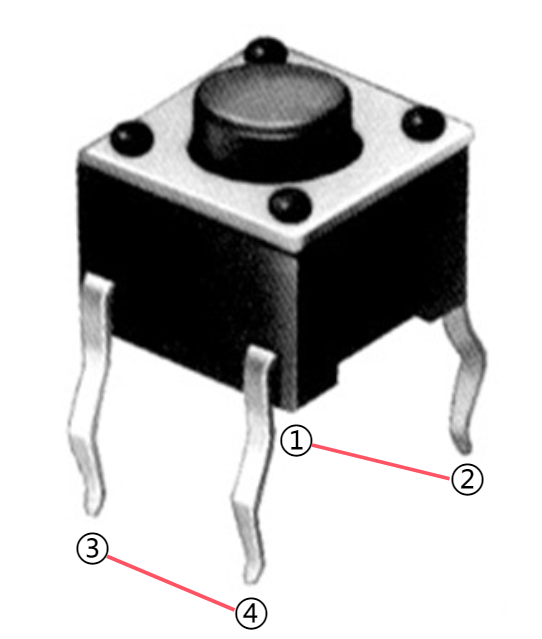
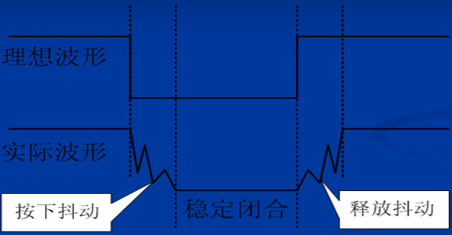
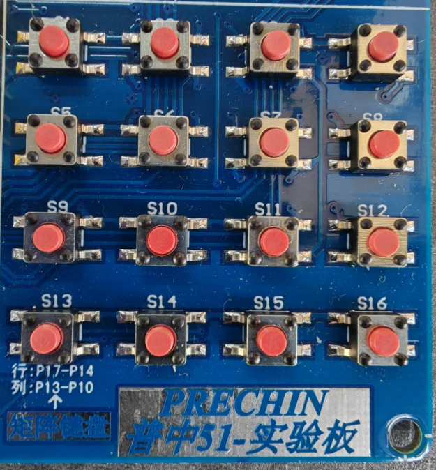
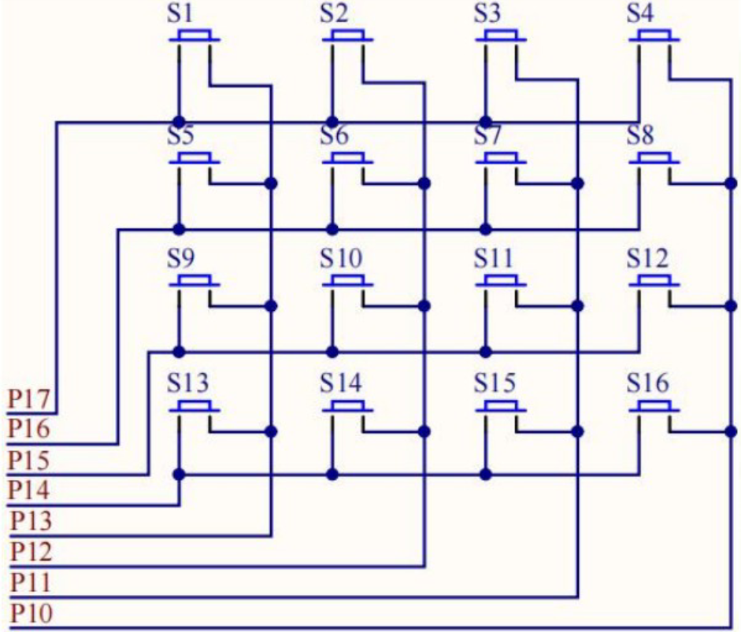

程序实验5&6.独立按键-矩阵按键
独立按键
按键介绍

一个按键拥有四个脚，其中①和②、③和④之间初始导通，而①和③、②和④之间只有按下按键才会导通。
在下拉电阻作用下，按键所处管脚默认为高电平，当按下按键时线路接地变成低电平。

在实际情况中，按键的状态切换过程存在抖动，而不是在高低电平之间瞬时、稳定地切换。由于抖动过程中的电平变化会造成按键状态的误判，因此需要采取消抖措施，有软件消抖和硬件消抖两种方法：
软件消抖根据实际经验估计抖动时间在5~10ms，于是可以在检测到第一次低电平后延时10ms再次检测，若仍为低电平可认为按键已处于按下状态。
硬件消抖在电路上并联滤波电容，利用按下按键后给电容充电的时间来滤除抖动影响。
由于硬件消抖占用的电路面积较大且产生的成本较高，在实际开发应用中通常使用软件消抖。


实验5 独立按键
实现功能：通过开发板上的独立按键K1控制D1指示灯的亮灭。
1
2
3
4
5
6
7
8
9
10
11
12
13
14
15
16
17
18
19
20
21
22
23
24
25
26
27
28
29
30
31
32
33
34
35
36
37
38
39
40
41
42
43
44
45
46
47
48
49
50
51
52
53
54
55
56
57
58
59
60
61
62
63
64
65
66
67
|
#include "reg52.h"
typedef unsigned char u8;
typedef unsigned int u16;
//定义四个按键的控制管脚
sbit KEY1 = P3^1;
sbit KEY2 = P3^0;
sbit KEY3 = P3^2;
sbit KEY4 = P3^3;
//定义D1指示灯的控制管脚
sbit LED1 = P2^0;
//延时函数
void delay_10us(u16 time)
{
while(time --);
}
/*
按键扫描函数
扫描有两种方式：一种只对按下瞬间扫描，不考虑按下后是保持还是松开（点按控制）；另一种为持续扫描按键按下的状态（长按控制）
mode参数决定该函数采用哪种扫描，0为点按，1为长按
*/
u8 key_scan(u8 mode)
{
//定义控制是否检测按下状态的变量，1检测，0不检测，注意静态变量赋值只生效一次
static u8 key = 1;
//如果为长按扫描则检测按下状态
if(mode)
key = 1;
//如果需要检测按下状态且有按键按下（低电平），则消抖后再检测具体是哪个按键被按下
if(key == 1 && (KEY1 == 0 || KEY2 == 0 || KEY3 == 0 || KEY4 == 0))
{
key = 0; //重置key变量默认下一次不需要检测按下状态
delay_10us(1000); //消抖
//检测到哪个按键按下则返回对应的按键序号
if(KEY1 == 0)
return 1;
else if(KEY2 == 0)
return 2;
else if(KEY3 == 0)
return 3;
else if(KEY4 == 0)
return 4;
}
//如果没有按键被按下则下一次继续检测是否有按键被按下
else if(KEY1 == 1 && KEY2 == 1 && KEY3 == 1 && KEY4 == 1)
{
key = 1;
}
return 0;
}
void main()
{
u8 key = 0; //存储按下按键序号的变量，没有按键被按下则为0
while(1)
{
key = key_scan(0); //循环按键扫描函数
if(key == 1)
LED1 = !LED1; //如果按键K1被按下则切换D1指示灯状态
}
}
|
矩阵按键
矩阵按键介绍

在独立按键中，一个按键占用一个I/O口。当按键数量较多时，如果采用独立按键的接法会占用非常多的I/O资源。单片机为了减少I/O占用的引脚，引入了矩阵按键。

矩阵按键的一端串联在行线路上，另一端串联在列线路上，当按键按下时，按键所在的行线路和列线路接通。所有线路在下拉电阻作用下默认为高电平。
矩阵按键的扫描有两种方法：
行列式扫描按行（列）将矩阵按键拆成多组独立按键，对每一行（列）进行扫描时，将该行（列）设为低电平以达到独立按键中接地的条件，然后按独立按键扫描方法扫描，依次扫描完每一行（列）。
线翻转扫描按先列（行）后行（列）的方式确定按下按键的位置，先将所有行（列）线路接地，检测哪一列（行）有按键被按下，则对应的列（行）接通为低电平；再将所有列（行）线路接地，检测哪一行（列）有按键被按下，结合被按下按键的列（行）坐标确认其序号。
实验6-1 行列式扫描
实现功能：按下矩阵按键S1到S16使数码管第一位显示0到F。
1
2
3
4
5
6
7
8
9
10
11
12
13
14
15
16
17
18
19
20
21
22
23
24
25
26
27
28
29
30
31
32
33
34
35
36
37
38
39
40
41
42
43
44
45
46
47
48
49
50
51
52
53
54
55
56
57
58
59
60
61
62
63
64
65
66
67
68
69
70
71
72
73
74
75
76
77
78
79
80
81
82
83
84
85
86
87
88
89
|
#include "reg52.h"
typedef unsigned char u8;
typedef unsigned int u16;
//宏定义矩阵按键端口
#define KEY_MATRIX_PORT P1
//宏定义数码管端口
#define SEG_A_DP_PORT P0
//数码管0~F编码
u8 gseg_code[16]={0x3f, 0x06, 0x5b, 0x4f, 0x66, 0x6d, 0x7d, 0x07, 0x7f, 0x6f, 0x77, 0x7c, 0x39, 0x5e, 0x79, 0x71};
//延时函数
void delay_10us(u16 time)
{
while(time --);
}
//行列式扫描函数
u8 key_matrix_ranks_scan()
{
u8 key_value = 0; //存储按下按键序号的变量，没有按键被按下则为0
KEY_MATRIX_PORT = 0xf7; //第一列设为低电平，即P1端口高位到低位输出11110111（前四位为行，后四位为列），再转换为十六进制
if(KEY_MATRIX_PORT != 0xf7) //如果第一列有按键按下，则具体检测第一列哪一行按键被按下
{
delay_10us(1000); //消抖
switch(KEY_MATRIX_PORT) //检测哪一行为低电平
{
case 0x77: key_value = 1; break;
case 0xb7: key_value = 5; break;
case 0xd7: key_value = 9; break;
case 0xe7: key_value = 13; break;
}
}
while(KEY_MATRIX_PORT != 0xf7); //点按扫描在按下按键松开之前不再检测
KEY_MATRIX_PORT = 0xfb; //扫描第二列
if(KEY_MATRIX_PORT != 0xfb)
{
delay_10us(1000);
switch(KEY_MATRIX_PORT)
{
case 0x7b: key_value = 2; break;
case 0xbb: key_value = 6; break;
case 0xdb: key_value = 10; break;
case 0xeb: key_value = 14; break;
}
}
while(KEY_MATRIX_PORT != 0xfb);
KEY_MATRIX_PORT = 0xfd; //扫描第三列
if(KEY_MATRIX_PORT != 0xfd)
{
delay_10us(1000);
switch(KEY_MATRIX_PORT)
{
case 0x7d: key_value = 3; break;
case 0xbd: key_value = 7; break;
case 0xdd: key_value = 11; break;
case 0xed: key_value = 15; break;
}
}
while(KEY_MATRIX_PORT != 0xfd);
KEY_MATRIX_PORT = 0xfe; //扫描第四列
if(KEY_MATRIX_PORT != 0xfe)
{
delay_10us(1000);
switch(KEY_MATRIX_PORT)
{
case 0x7e: key_value = 4; break;
case 0xbe: key_value = 8; break;
case 0xde: key_value = 12; break;
case 0xee: key_value = 16; break;
}
}
while(KEY_MATRIX_PORT != 0xfe);
return key_value;
}
void main()
{
u8 key = 0; //存储按下按键序号的变量，没有按键被按下则为0
while(1)
{
key = key_matrix_ranks_scan(); //循环行列式扫描函数
if(key != 0)
SEG_A_DP_PORT = gseg_code[key - 1]; //按下按键将数码管切换到对应的值
}
}
|
实验6-2 线翻转扫描
1
2
3
4
5
6
7
8
9
10
11
12
13
14
15
16
17
18
19
20
21
22
23
24
25
26
27
28
29
30
|
//线翻转扫描函数，将实验6-1中调用行列式扫描函数的地方替换为该函数即可
u8 key_matrix_flip_scan()
{
u8 key_value = 0; //存储按下按键序号的变量，没有按键被按下则为0
KEY_MATRIX_PORT = 0x0f; //将行线路全部接地，即P1端口输出00001111
if(KEY_MATRIX_PORT != 0x0f) //如果有按键按下则进入具体检测
{
delay_10us(1000); //消抖
if(KEY_MATRIX_PORT != 0x0f)
{
switch(KEY_MATRIX_PORT) //检测哪一列为低电平，则该列有按键被按下
{
case 0x07: key_value = 1; break;
case 0x0b: key_value = 2; break;
case 0x0d: key_value = 3; break;
case 0x0e: key_value = 4; break;
}
KEY_MATRIX_PORT = 0xf0; //将列线路全部接地
switch(KEY_MATRIX_PORT) //检测哪一行为低电平
{
case 0x70: key_value += 0; break; //按键序号 = 列序号 + 4 * (行序号 - 1)
case 0xb0: key_value += 4; break;
case 0xd0: key_value += 8; break;
case 0xe0: key_value += 12; break;
}
while(KEY_MATRIX_PORT != 0xf0); //点按扫描在按下按键松开之前不再检测
}
}
return key_value;
}
|
本篇完